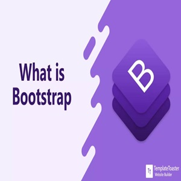

Developpeur full stack :
programmeur de site web, application mobile
gammeur :
jeux video
Domaies de competences
Developoement front-end
HTML

Connaissance en HTML
maîtrise la structure des pages web,
maîtrise la sémantique des balises HTML,
l'intégration de contenu multimédia,
les bonnes pratiques d'accessibilité, référencement...
CSS

Connaissance en CSS
maîtrise la mise en page avec Flexbox et Grid,
la gestion des styles responsives,
les animations de base,
la personnalisation des éléments
avec des sélecteurs et des propriétés CSS.
JAVASCRIPT

Connaissance en javascript
maîtrise la manipulation du DOM, les fonctions,
les événements, la gestion des tableaux et objets,
ainsi que les concepts de base de l'asynchrone
Developoement Back-end
Python

Connaissance en Python
Maîtrise la syntaxe de base,
les structures de données (listes, dictionnaires),
la gestion des erreurs, les fonctions,
les concepts fondamentaux de la programmation orientée objet.
php
Connaissance en php
Maîtrise la gestion des formulaires,
L'interaction avec les bases de données (MySQL),
La manipulation des sessions
et cookies,
Les bases de la programmation orientée objet.
Node.js
Connaissance en Node.js
Maîtrise la création d'applications serveur,
La gestion des modules npm, les requêtes HTTP,
L'usage de la base de données avec MongoDB ou MySQL,
Les concepts de programmation
asynchrone avec les callbacks
et les promesses.
Base de données
MySql
Connaissance en Mysql
Maîtrise la création et gestion de bases de données,
L'écriture de requêtes SQL (SELECT, INSERT, UPDATE, DELETE),
L'optimisation des requêtes simples
La gestion des relations entre tables avec
des clés primaires et étrangères.
MangoDB
Connaissance en MangoDB
maîtrise la création et gestion de bases de données NoSQL,
L'utilisation de collections et documents,
L'écriture de requêtes de base (find, insert, update, delete)
La gestion des indices pour optimiser les performances.
Framework
BOOTSTRAP
Connaissance en BOOTSTRAP
Maîtrise la création de mises en page responsives,
L'utilisation des composants prêts à l'emploi
(boutons, formulaires, modales)
L'adaptation du design avec les classes utilitaires du framework.
Tailwindcss
Connaissance en TailwindCss
Maîtrise la création de designs responsives en utilisant
Les classes utilitaires,
La personnalisation des styles à des
configurations
La gestion de la mise en page avec Flexbox et Grid.
REACT
Connaissance en React
Maîtrise la création de composants fonctionnels,
La gestion de l'état avec useState et useEffect,
L'intégration des événements
La gestion du routage avec React Router.
GIT
Connaissance en GIT
Maîtrise les commandes de base (commit, push, pull, branch),
La gestion des versions, la résolution de conflits
L'utilisation des branches pour le travail collaboratif.
Mes projets en cours et à venir
Projets Réalisés à Gomycode
HTML checkPoint
Technologies
- balises sémantiques
- ajout de vidéo/audio à la page web.
- Ajout des liens locaux, des listes ou des tableaux.
- Utilisation des formulaires HTML.
CSS checkPoint
Technologies
- Créer un fichier `styles.css`.
- Liez le fichier css à notre projet HTML.
- Changer la police de caractères.
- Ajouter des attributs de classes aux documents HTML.
CSS BOOTSTRAP
Technologies
- Liez un lien cdn bootstrap
- Utilisez le système de grille de Bootstrap.
- Gerer la responsivité des ecran
- Utiliser les classes appropriées pour la réactivité
CSS TailwindCss
Technologies
- Les classes Tailwind pour la stylisation et la réactivité
- les classes Tailwind pour le style du formulaire
- les classes Tailwind pour les badges ou les balises.
- Ce site est un exemple concret de Tailwindcss !